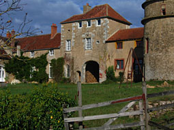  |
 |
| Conception [ Zur Philosophie Monthelons siehe : Die unsichtbare Quelle.pdf ] |
| Monthelon ist ein Ort zur Entwicklung, Vorbereitung und Realisierung von künstlerischen Ideen und Projekten verschiedenster Richtungen sowie genreübergreifender Konstellationen. |
  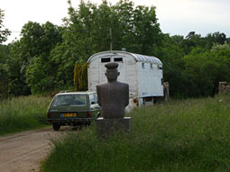 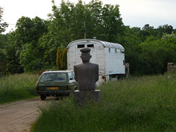 |
| Darüberhinaus können auch Seminare, Tagungen oder "think-tanks" mit politischen, sozialen oder philosophischen Inhalten sowie Mediationen zur Konfliktbewältigung stattfinden. |
 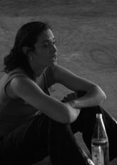 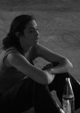  |
| Auf einem Hügel, abseits gelegen und unbeeinflußt von städtischen Suggestionen, befinden sich verschiedene Gebäude und Einrichtungen, die geeignete Bedingungen für kollektives und individuelles "working in progress" gewähren. |
|
|
| |
| Infrastruktur |
Monthelon verfügt über eine Infrastruktur, die es Bildenden Künstlern, Theater-, Tanz-, Musik-, Performance oder Zirkuscompagnien erlaubt, an ihren Projekten zu arbeiten.
Es können Gruppen von ungefähr 20 Personen untergebracht werden.
Zusätzlich finden 10 Personen Platz zur Realisierung individueller Vorhaben. |
|
|
Es können Gruppen von ungefähr 20 Personen untergebracht werden.
Zusätzlich finden 10 Personen Platz zur Realisierung individueller Vorhaben. |
   |
| Die Infrastruktur umfaßt: - individuell ausgestattete Unterkünfte |
| 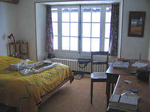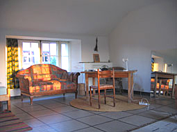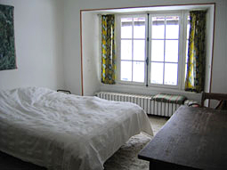 |
| - Mehrbett-, Doppel- und Einzelzimmer, evt. Wohnwägen |
| - sanitäre Einrichtungen (10 Toiletten, 6 Duschen, 2 Bäder)
|
 |
| - professionelle Küchenausstattung |

|  |
- Speisezimmer
- Aufenthaltsräume
- Biblio - und Videothek |
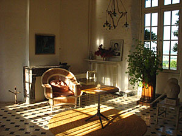  |
- eine Schneiderei,
- ein Werkplatz für Bildhauerarbeiten
- diverse Ateliers,
- Elektronikatelier inclusive fragmentarischer Gerätschaften,
- Metallwerkstatt
- Schreinerei |

|  |
| |
| - ein größerer Raum für Körperarbeit / Meditation |
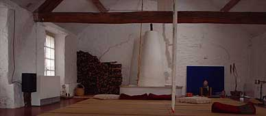 |
| - Theatersaal / Probenraum mit technischer Grundausstattung |   |
- Büroausstattung mit Internetzugang
- ein Kostümfundus
- ein Flügel
- Swimmingpool |
 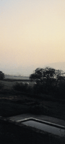 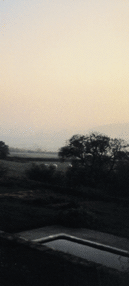
|
| - ein 2 qkm großes Gelände |
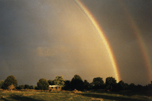 |
| - Zirkuszelt incl. Gerätschaften und Einrichtungen |
 |
|
| |
| geographische Lage |
| - malerisch gelegen auf einem sanftem Hügelzug, in einer der am spärlichsten besiedelten Gegenden Frankreichs, im Burgund, Department Yonne, zur Kommune Montréal gehörend |
 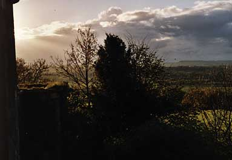 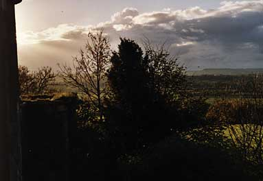 |
| - excellente internationale Bahnverbindung, TGV Richtung Paris - Dijon, Station Montbard - Direktanschluß zum Flughafen Charles de Gaulle, Dijon, Lille (mit Anschlüssen nach London, Brüssel, Berlin u.a.), - A6, Autobahnabfahrt Avallon, Route Paris - Lyon |
| 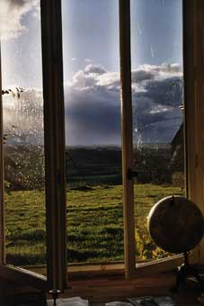 |
| |
| leben und arbeiten |
| Der Aufenthalt auf Monthelon und dessen Dauer sind projektgebunden. Die hier arbeitenden Künstler und Kulturschaffenden verschiedener Nationen leben in einer Atmosphäre der gegenseitigen Bezugnahme, Toleranz und Offenheit. Monthelon gibt Raum für individuelle Recherchen und eröffnet darüberhinaus Möglichkeiten aus gewohnten Arbeitszusammenhängen herauszutreten. Eine Art Lebensmittelpunkt für die Bewohner ist die abendliche Tafelrunde. Die Bedingungen für den Aufenthalt auf Monthelon werden anhand vorhandener Unterlagen des Bewerbers im gemeinsamen Gespräch mit den Betreibern vereinbart. |
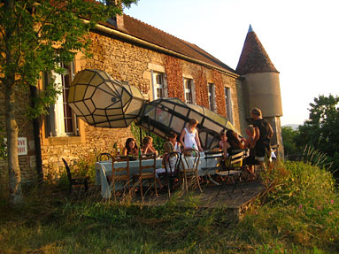 |
| |
| geschichte |
| Montis-Alo, ursprünglich ein Dorf auf dem Berg Montelon, wurde im 8. Jh. u.Z. zum ersten Mal urkundlich erwähnt. Die einstige Schloßanlage aus dem 9. Jahrhundert hat die Zeiten nicht überdauert. Marodierende Kreuzritter verwüsteten zu Beginn des 13. Jh. die Burganlage, deren Erneuerung und Konsolidierung als Grafschaft mit der Erstarkung des Herzogtums Burgund einherging. Der Herrensitz, gehörte 1280 Henri, Vogt von Montréal, 1315 Robert de Semizelles, 1370 Robert de Montéplain und wurde 1374 durch Gauthier de Brignard, Seigneur de Corsaint, an Huguenin, Gryer de Montréal, verkauft. |
 |
Während der französischen Revolution von 1789 - 95 zerstörten rebllierende Bauern das Anwesen. Die Architekturzeichnung(s. u.)zeigt eine halbdemolierte Wohnanlage. Die Ruinen, die sich an die einstigen Reste der äußeren Umfriedung lehnen, erinnern an eine mehrfach umgebaute Schloßanlage. Die Kappelle zur heiligen Madonna, eine sehr einfache Konstruktion, vermutlich aus dem 15. Jahrhundert, ist in den zerstörten Gebäudeteilen noch erkennbar. Das Spitzbogen-fenster der einstigen Kapelle existiert noch. Es wurde nach dem Zweiten Weltkrieg im Zuge einer partiellen Rekonstruktion in den linken Flügel des Gebäudes eingesetzt (s.a.Startseite).
Source : Tiré de Victor Petit, Description des villes et campagnes du Département de l'Yonne. Arrondissement d'Avallon , Avallon: Librairie Voillot, 2001 (première édition Auxerre: Ch. Gallot, 1870), S. 116 |
1870 wurde die Anlage von der Familie Denèvre de Domecy gekauft, die großen noch erhaltenen Gebäude dienten landwirtschaftlichen Zwecken.
Nach dem 2. Weltkrieg hat man die Gebäudereste erneuert. In der Folge war es Kinderheim, später Kinderferienheim einer Arbeitergewerkschaft.
Die Umgestaltung der Gebäude in eine Produktionsstätte für künstlerische Projekte begann 1989, nachdem die Anlage von Eva Bruderer und Ueli Hirzel erworben wurde. Am 8.8.2008 wurde das Grundstück an Ueli Hirzel und Daniel Ott überschrieben. |
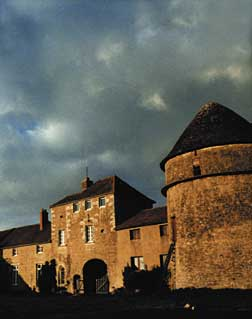 |
| |
| bilanz |
 |
In den 20 Jahren seines Bestehens haben rund 1500 Künstler aus 25 verschiedenen Nationen über 500 Projekten auf Monthelon gearbeitet. Monthelon war durchschnittlich von zwölf Personen bewohnt, des weiteren von den Monthelon-Machern und deren in dieser Aufstellung nicht erfassten Gästen. Die durchschnittliche Aufenthaltsdauer pro Person betrug vier Wochen. Viele der hier geschaffenen Produktionen wurden im Rahmen der "Rencontres" gezeigt, einem inzwischen von Region und Nachbarschaft geschätzten Festival. Darüberhinaus tragen die Kulturschaffenden vor Ort und ihre zahlreichen "Work in Progress"-Arbeiten, Konzerte und Ausstellungeneinen nicht unerheblichen Anteil daran, das kulturelle Niveau im Department mitzugestalten.
siehe : Projekt_Übersicht_ detailliert 2000 - 2013
siehe auch : Auswahl Homepages of Residents |
| |
| auswirkungen auf die region |
| Als direkte Folge der auf Monthelon realisierten Projekte haben sich in der näheren Umgebung seit 1990 elf Familien mit insgesamt 52 Personen niedergelassen, 22 von ihnen sind Kinder, welche in diesem Zeitraum geboren wurden. Fünfzehn Häuser bzw. Anwesen wurden erworben, umgebaut und renoviert. In enger Zusammenarbeit mit dem lokalen Handwerk sind Gradins gebaut, Wägen restauriert, Bühnenausstattungen und Assecoirs entwickelt worden - verbunden mit nicht unerheblichen kulturellen und wirtschaftlichen Auswirkungen für die Region. |
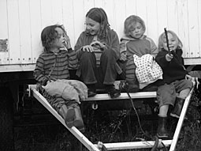 |
| |
| grundriss |
 |
1. und 2. Geschoss |
| 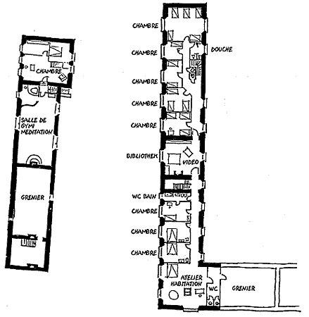 |
| |
nach oben
Layout et Photos © Suijk |